Why a methodology at all?
A common pattern: someone gives a chatbot a vague request, gets back something that looks correct, and uses it. Two weeks later the error surfaces. The fix is not a better chatbot — it's a better way of using one.
The methodology in this module is the same whether the AI you are directing is a chatbot (you talk, it writes), an agent (it can read, plan, and act on its own across many steps), or a team of humans. It applies to budgets, memos, presentations, code, document review, and almost any non-trivial knowledge work. It is built around four phases.
The four phases
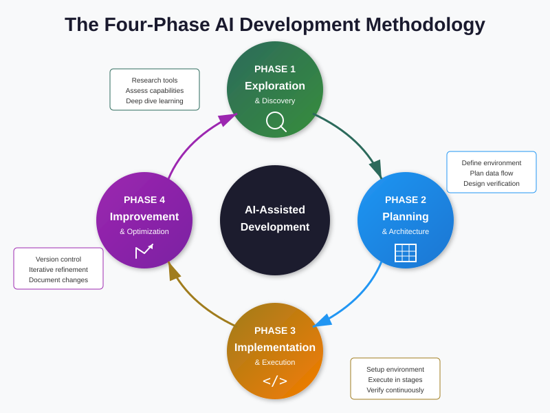
1. Exploration
Before you ask the AI to do anything, understand the territory. What's the existing material? What's the format of the data? Who else has solved this problem? What are the constraints? When you skip exploration you end up with a beautiful answer to the wrong question.
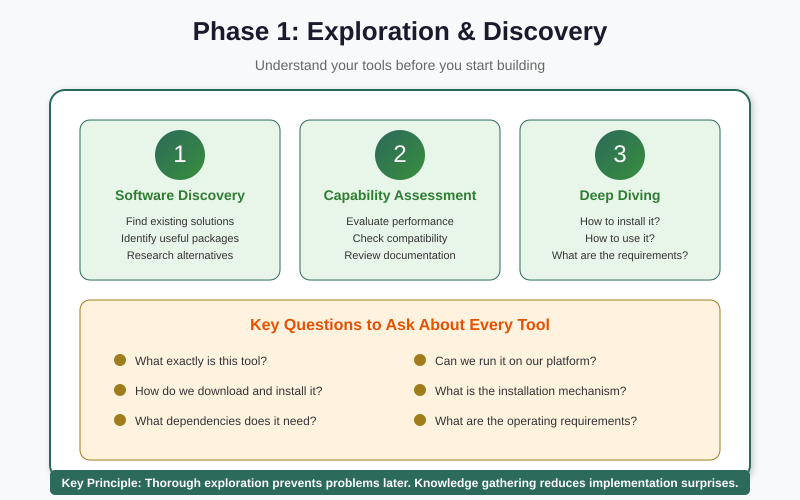
2. Planning
Decide on the approach before you start producing output. The four planning questions below force this. Planning is cheap; rework is expensive.
3. Implementation
Now you do the work — or, more usefully, you direct the AI to do the work in tight iterations. Upload a piece, get a result, save the result, check it, repeat. The AI generates; you verify.
4. Improvement
When the first draft exists, improvement is much cheaper than first-draft writing. Refine the content, remove what doesn't earn its place, fact-check anything load-bearing, then ship. After shipping, learn what didn't land — and feed that back into next time's exploration.
The four critical planning questions
Before you tell the AI to start, answer these four questions yourself. If you can't, the AI can't either.
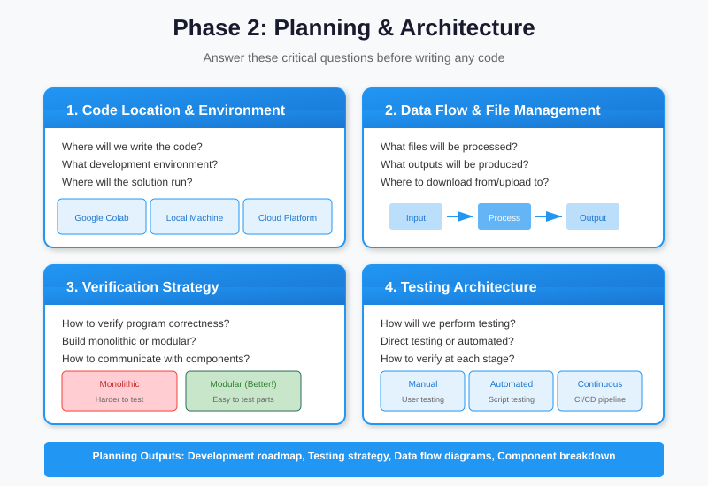
- What is the actual output? A memo? A spreadsheet? A talking-points list? Be exact.
- Who is the audience? A director with five minutes? A technical team? A minister? The same content needs different framing for each.
- What inputs does the AI need to do this? A draft, prior examples, source documents, the data itself. If you wouldn't expect a junior colleague to do this without those inputs, the AI can't either.
- How will you know it's good? Decide your acceptance criteria before you see the output. Otherwise you'll either accept a flawed result because it looks polished, or reject a good one because it doesn't match the version in your head.
Test it yourself
Pick the next memo or report on your list. Try answering the four questions in writing before you open ChatGPT. Notice how often Question 4 (acceptance criteria) is the one you've never thought through.
The iterative workflow
The six-step loop you run during the Implementation phase, again and again, in tight cycles:
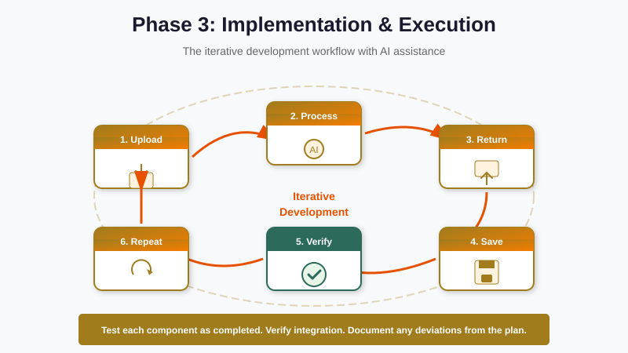
- Upload. Give the AI just enough context to do this step — not the whole project. More context isn't always better; it's often noise.
- Process. The AI generates. While it does, you think about what good would look like.
- Return. You read the result. Don't skim. Read like an editor.
- Save. If it's good (or partially good), commit it somewhere outside the chat — a doc, a file, a notebook. Chats are ephemeral; your work shouldn't be.
- Verify. Check the parts that matter. Numbers, names, dates, citations — anything load-bearing.
- Repeat. Take the next slice and run it through the loop.
The single most common failure
Skipping Save. People keep working inside the chat, watching their progress scroll up and away, until something breaks and they can't recover the version from twelve turns ago. Save out of the chat early and often.
Multi-level testing
You wouldn't accept an Excel formula without checking it on a row you can verify by hand. AI output deserves the same hierarchy of checks. Software engineering has a useful frame here — the testing pyramid:
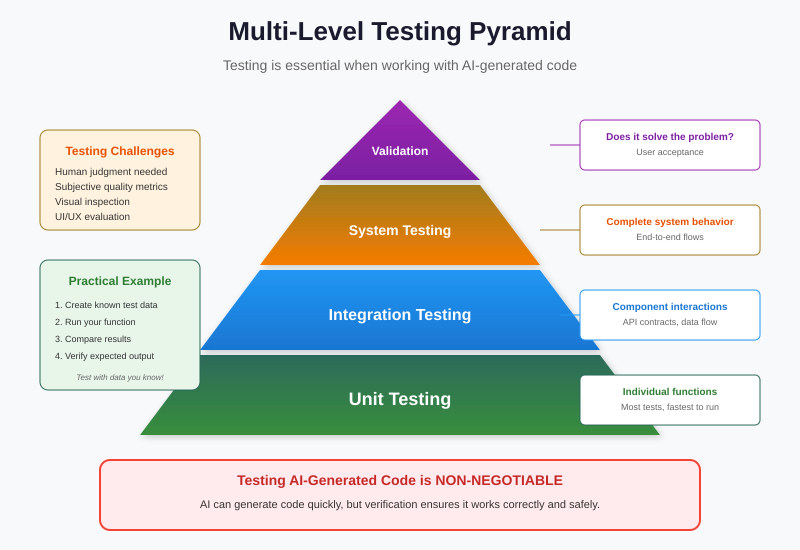
- Unit-level (cheap, many). Spot-check small pieces. Did this paragraph cite the right report? Does this number actually appear in the source?
- Integration-level (moderate). Read a whole section end-to-end. Does the argument hold together? Does the conclusion follow from the body?
- End-to-end (expensive, rare). Have a real reader read the whole thing — preferably someone who matches your target audience. Watch where they stumble.
The discipline is to do more of the cheap tests and fewer of the expensive ones. Most failures could have been caught at the unit level — one wrong number, one misattributed quote.
Managing the context window
Every AI tool has a context window — how much it can hold in its head at once. Modern tools have very large windows (hundreds of pages of text), but they still have limits, and more importantly: more context isn't always better. Pasting in a 200-page policy when only 5 pages are relevant produces worse results, not better, because the AI now has to find the signal in the noise.

Three habits make a real difference:
- Quote, don't dump. Paste the relevant paragraph, not the whole document.
- Re-anchor every few turns. "Recall: we are writing the executive summary for the Director of IT, not the technical appendix." Long chats forget.
- Start fresh when scope changes. If you've been editing a memo for an hour and now want to draft a press release, open a new chat. The old context is now noise.
The responsibility checklist
The AI did the typing. You are responsible for what's in the document. Before you ship anything an AI helped produce, run this checklist:
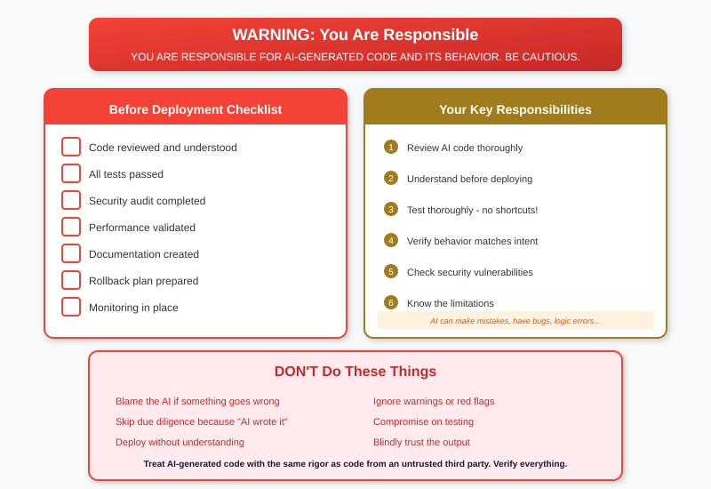
- Every name, number, date, and citation has been verified against the source.
- Nothing sensitive (personal data, internal financials, classified information) was shared with a tool that shouldn't have it — we'll go deep on this in Day 3.
- The tone matches the audience.
- The argument holds without the sentences I added that just sound impressive.
- If asked, I can explain how this was produced.
Agents in action
A chatbot waits for you to type. An agent takes a goal and works on it on its own — reading files, running code, calling tools, deciding what to do next, and reporting back. The same four phases apply, but the agent runs many micro-iterations of Implementation under the hood for each thing you ask of it.
The agent loop, in plain language:
- Read. Look at what's in front of it (a file, a previous result, the user's last message).
- Plan. Decide the next small step.
- Act. Take that step (run code, write a file, call an API).
- Observe. Look at what came back.
- Repeat. Until the goal is met or it's stuck.
The same five-step loop describes a junior analyst working through a task. The difference is that the agent does it in seconds, all day, without lunch. That speed is the point — and the danger. When the loop is wrong, it's wrong fast.
Live demo (instructor-led)
In the live session, the instructor will run an agent (Claude Code or equivalent) on a realistic task: a CSV of fake employee records that needs to be checked for anomalies. The terminal is projected and each turn of the loop is narrated. Watch which step in the four-phase methodology each agent action maps to.
For an offline taste, you can also watch two AI agents play a non-trivial game in the Baloot AI Arena. Notice how each move is the output of a small read-plan-act-observe loop.
Natural Query Language — data work without code
Five years ago, asking "what was our average ticket-resolution time per region last quarter?" of a spreadsheet required either a SQL query, a pivot table, or a phone call to an analyst. Today, you paste the spreadsheet into ChatGPT or Claude and you ask the question in English (or Arabic) and you get the answer.
This is sometimes called natural-language querying or NQL. The AI is doing the same data work an analyst would do — loading the file, slicing it, aggregating — but the interface is your sentence, not a programming language.
Three observations matter for leaders:
- It works. For the kinds of analysis a 5-page spreadsheet supports, the answer is usually right.
- The accuracy depends on your wording. Vague questions get vague answers. "What's our trend?" is much weaker than "Plot weekly resolution time by region for Q3 and tell me which region's trend changed the most."
- You should ask for the work, not just the result. Tell the AI to show its calculation, not just the final number. You catch errors much faster.
The vague-vs-specific contrast
Weak prompt: "What's interesting in this data?"
Strong prompt: "Group rows by region, compute the median resolution time per region, sort descending, and show me the top three. Then tell me which one is the outlier and why."
The second prompt is using the right vocabulary — group by, median, sort, outlier — even though no code was written. That vocabulary is what we cover next.
Pandas vocabulary for better prompts
Pandas is the most-used data-analysis library in Python. We are not going to teach you to write Python. We are going to teach you the vocabulary, because it is the same vocabulary the AI will use when it does the work for you, and using it precisely makes your prompts dramatically better.
DataFrame
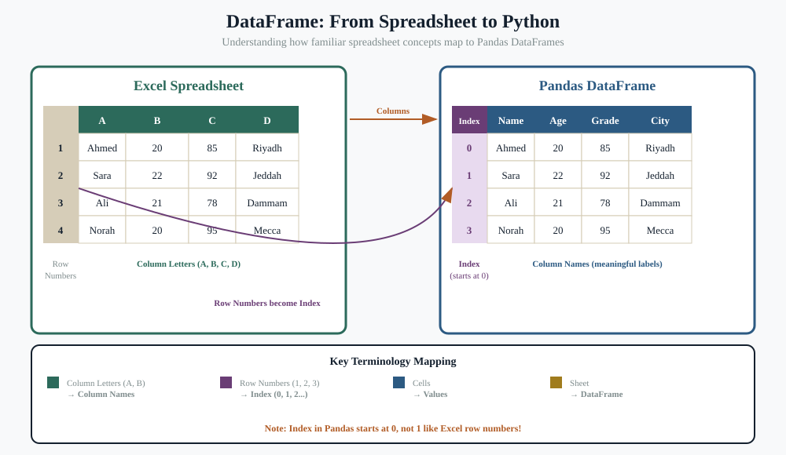
A DataFrame is a table — rows and columns, with column names at the top and a row identifier on the left (the index). When you paste a CSV into ChatGPT, it becomes a DataFrame in the AI's head. When you say "the third column," the AI may ask "do you mean the third by position or by name?" — that distinction is the next concept.
Series
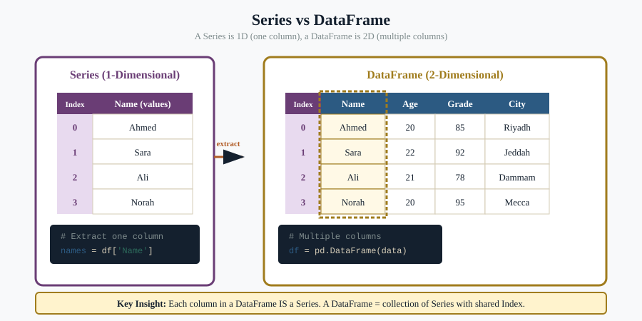
A Series is a single column (or single row) of a DataFrame. When you ask for "average sales" you are asking for an aggregation of the sales Series.
iloc vs loc — position vs label
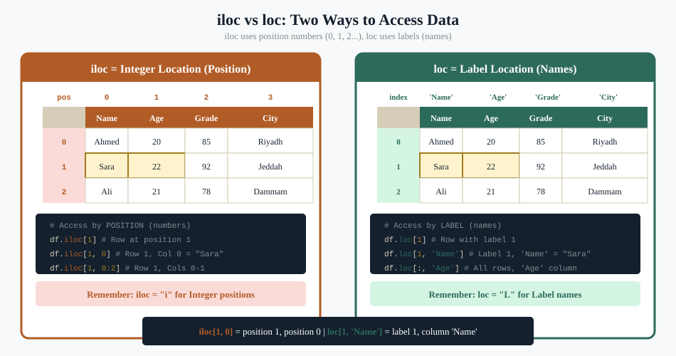
"Show me row 5" is ambiguous. Did you mean the row at position 5 (iloc[5]) or the row whose ID is 5 (loc[5])? They are usually different. Saying "the row at position 5" or "the row whose customer ID equals 5" eliminates the question.
NaN — missing data
NaN stands for "not a number" and means missing. A column might have an average that looks too low because it includes empty cells the AI silently treated as zero. Always ask: "Are there any NaN values in this column? How are they being handled?"
groupby
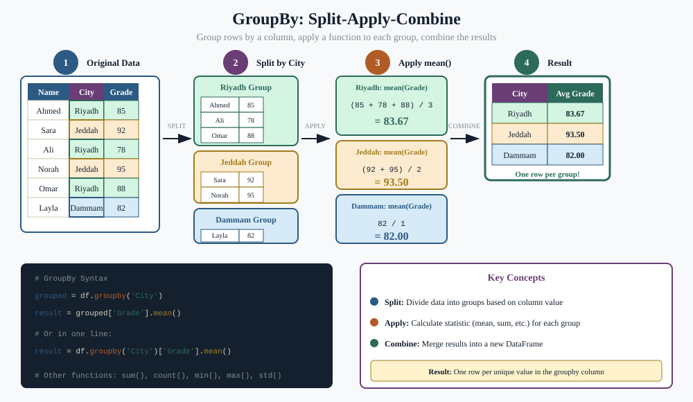
groupby is the most important word in your data vocabulary. It means: "split the rows by some category, then do something inside each group." This is what people mean by "per region" or "by department" or "for each customer." Use it.
info() vs describe()
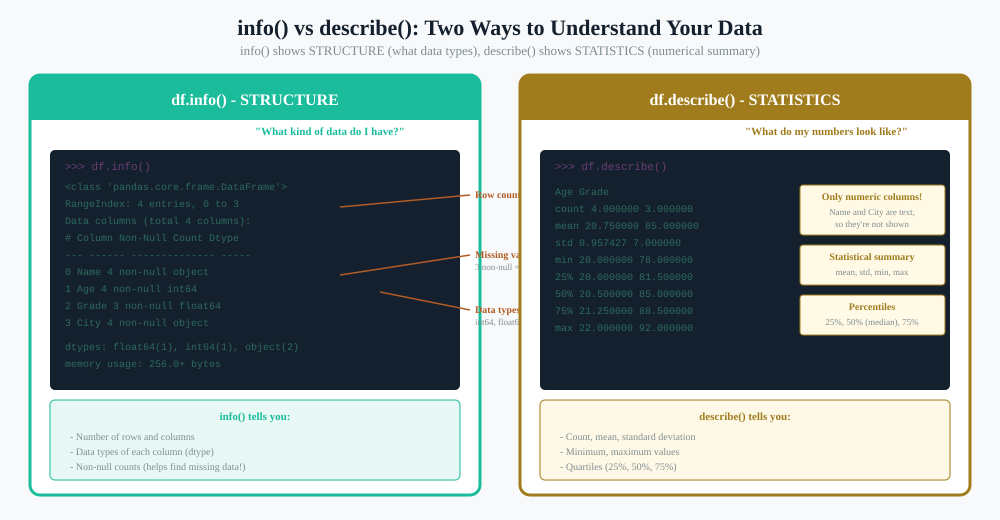
Two great opening prompts when you've just been handed a dataset:
- "Show me the info() of this DataFrame." — You'll see how many rows, what columns exist, what types they are, and how many missing values are in each.
- "Show me describe() for the numeric columns." — You'll see the mean, median, min, max, and standard deviation of each.
Knowing those two words moves a vague conversation about a CSV into a precise one.
The whole pipeline in one sentence
"Load the CSV into a DataFrame, run info(), then groupby region and aggregate the median resolution time, ignore NaN, sort descending, and show the top 3."
That sentence is not code. It's a prompt. But because it uses the right vocabulary, the AI will produce exactly the analysis you wanted on the first try.
What to take away
- The four phases — Exploration, Planning, Implementation, Improvement — apply to anything an AI helps you do, not just code.
- Answer the four planning questions before you ask the AI to start. Question 4 (acceptance criteria) is the one most often skipped and most often regretted.
- Run the Upload → Process → Return → Save → Verify → Repeat loop in tight cycles. Save out of the chat early and often.
- Use the testing pyramid: many cheap unit checks, fewer integration checks, rare end-to-end checks.
- You are responsible for what ships. The AI did the typing.
- Agents run the same loop, just much faster — which is the value and the risk.
- Use precise data vocabulary (DataFrame, Series, groupby, NaN, iloc/loc, info/describe) in your prompts. The vocabulary is more important than the syntax.